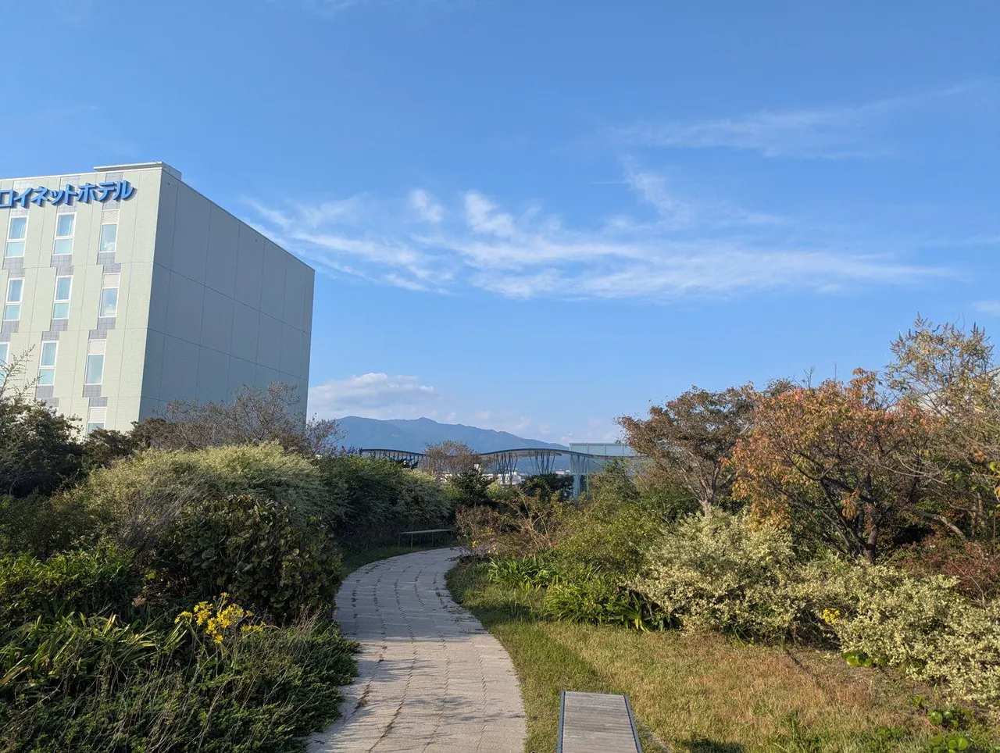
PyCon JP 2027 の会場、プラサヴェルデの下見に行ってきました
PyCon JP 2027 共同座長の池田です。2027年の会場、沼津のプラサヴェルデ(コンベンションぬまづ)を、10月17日・18日に共同座長の3人(佐野、Peacock、池田)で下見してきました。10月26日には主催メンバー向けの成果報告会をオンラインで開いたので、その様子と合わせて紹介します。
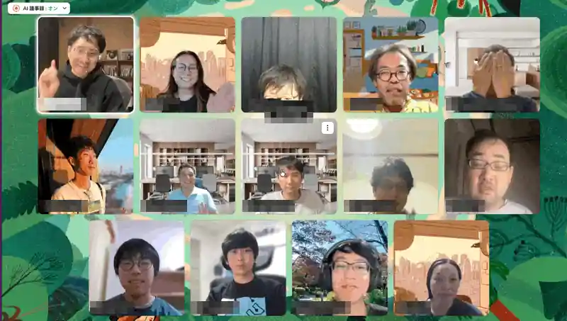
下見でやったこと
11時に沼津駅に集合して、まずはお寿司で昼ごはんにしました(沼津に来たらこれは外せないです)。14時からは会場の方、コンベンションビューローの方との打ち合わせで、事前に用意した質問リストにすべて答えてもらいました。その後は1Fから5Fまでほぼ全部を見て回り、撮った写真は115枚になりました。夜は駅の南口にあるブルーパブ Repubrew で振り返りをして、翌日は座長の作業会でこれからの進め方を話しています。
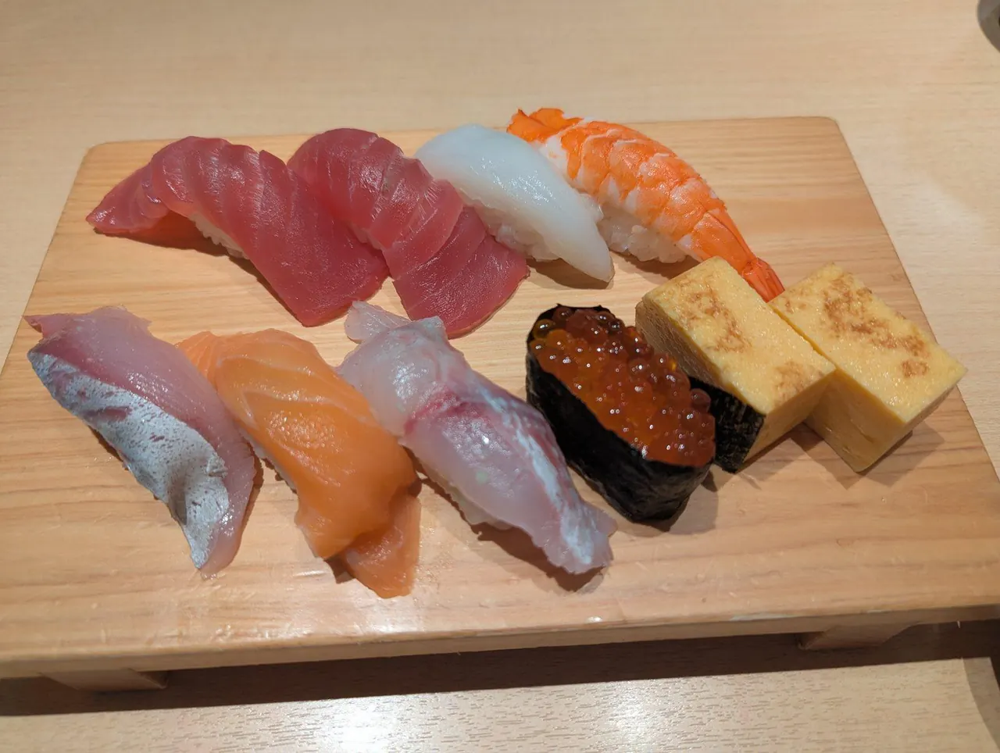
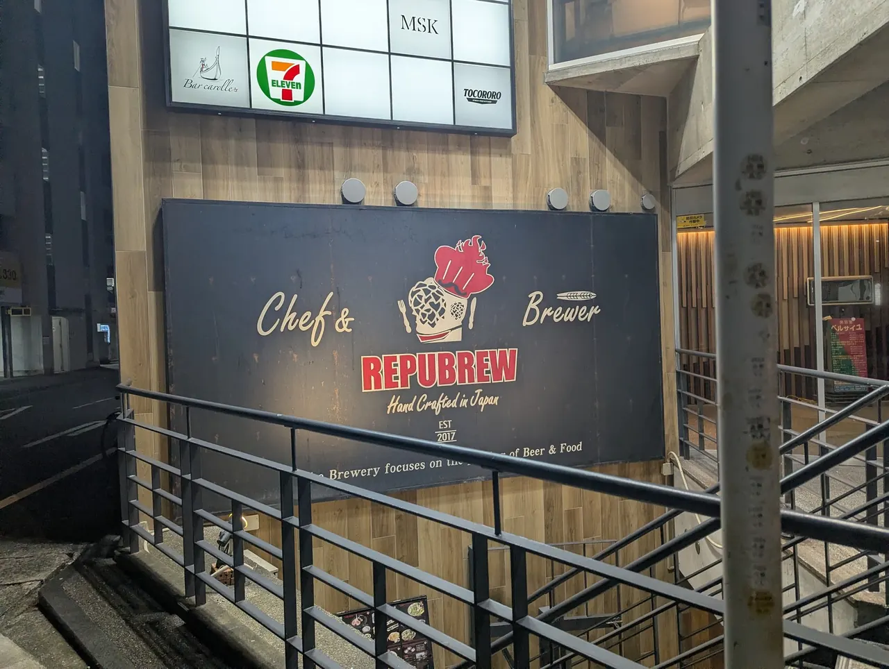
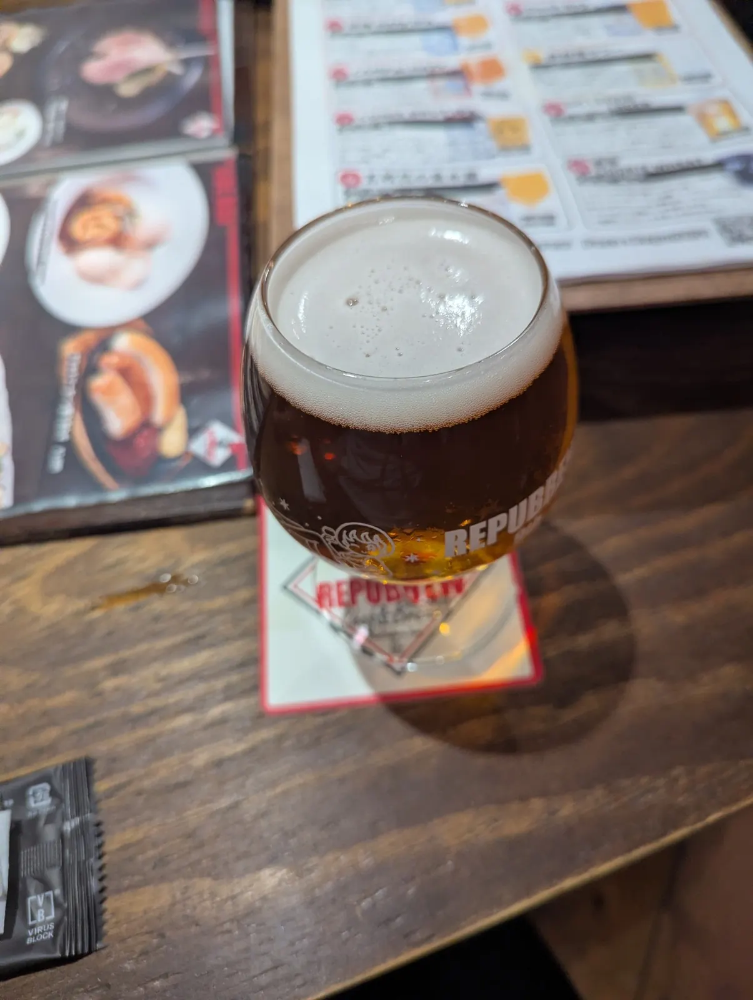
- 115撮った写真
- 5見て回ったフロア
- 4トーク会場(予定)
会場はこんなところ
プラサヴェルデは沼津駅の北口から歩いて3分、隣にホテルがある会場です。PyCon JP 2027 は、2027年9月24日(金)・25日(土)がカンファレンス、26日(日)がスプリントで、トークは4トラックで考えています。
1F ホールAとホワイエ
メインのホールAは、全面を使うとシアター形式で1,000席です。間仕切りで510席ずつに分けることもでき、分けても普通の音量なら反対側への音漏れは少なかったです。スクリーンは正面が300インチ、側面に250インチが2面あります。ホールの前のホワイエ(486㎡)は、受付やスポンサーブース、ウェルカムパーティに使えそうです。
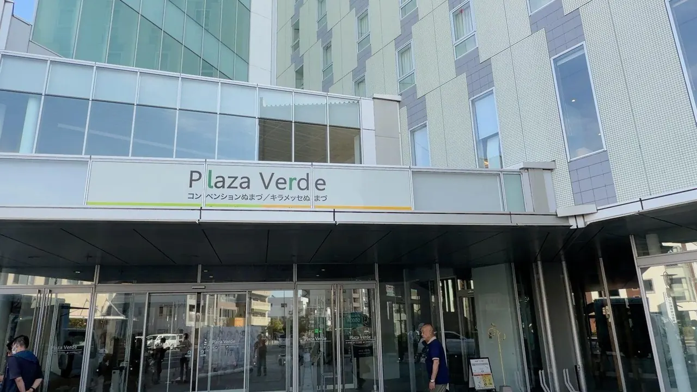
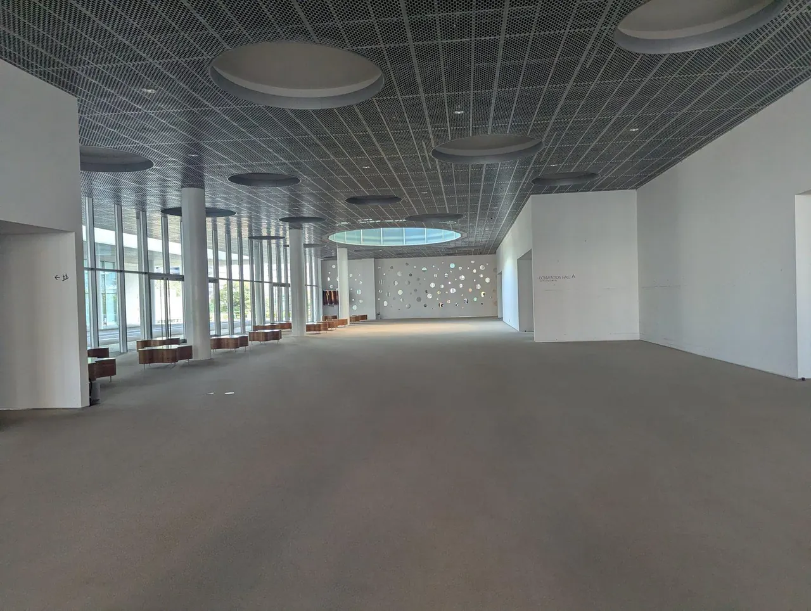
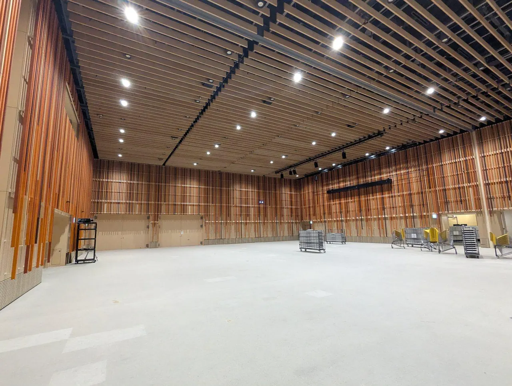
3F ホールBと会議室
ホールBは400席です。フローリングに波形の壁と間接照明で、雰囲気の良い部屋でした。301・302 は各120席で、つなげて使うこともできます。3F のホワイエにはソファとテーブルがあり、休憩やコミュニティブースの場所に良さそうです。
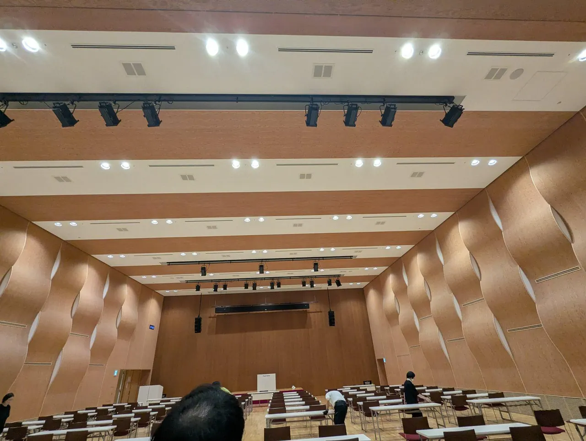
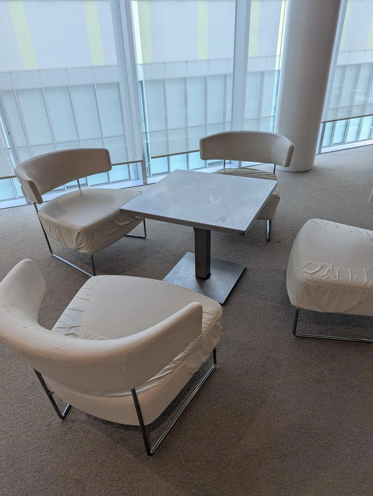
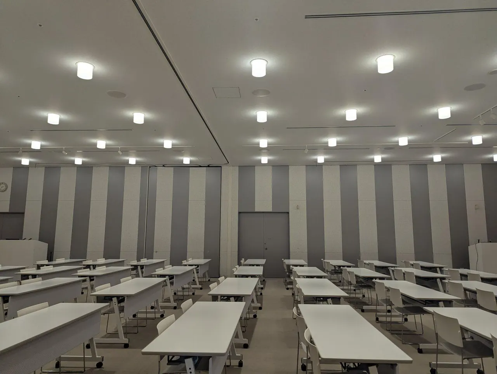
4F 会議室
401・402・407 は各120席で、ワークショップや OST に使えそうです。小さな会議室も多いので、クワイエットルームや祈祷室、託児の部屋も用意できます。
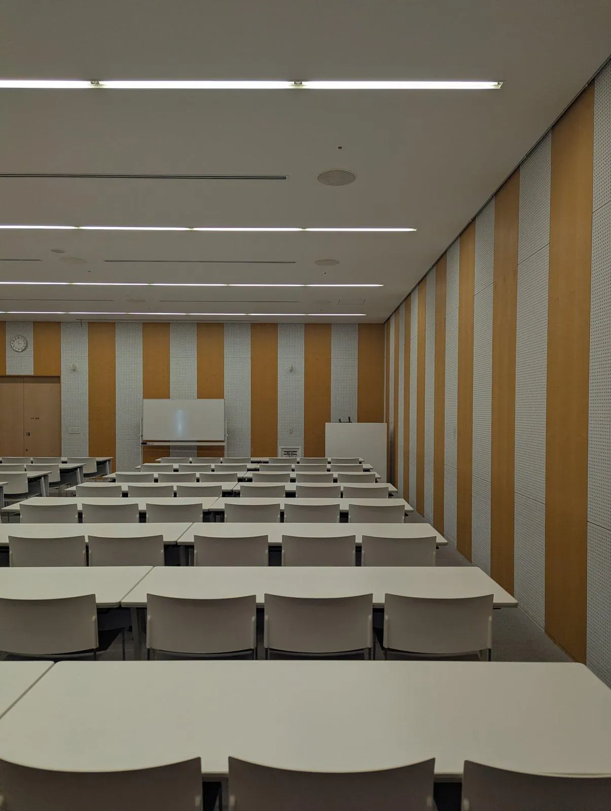
5F 屋上庭園
最大300人が入れる屋上庭園もあります(この記事の一番上の写真です)。屋根がないので雨の日の代わりは考えておく必要がありますが、アフターイベントに使えたら楽しそうです。
成果報告会のようす
10月26日の成果報告会では、自己紹介のあとに写真で館内を一緒に回り、チームの体制とこれからの予定を話しました。
チームは、企画・会場・参加者・協賛・広報の5つの事業チームに、開発・デザイン・地域連携の機能チームが横から加わる形です。2026 で参加者管理チームにいた方から「5人中4人が主催メンバーはじめてだった」という話もあり、はじめての人でも十分やっていけることが伝わったかなと思います。
質問・雑談では、スポンサーブースのあたりに日差しが入って暑くならないか、館内放送の設備はあるか(全館放送はなく、サイネージはモニターを借りて置く形)、宿をどこで取るか、といった話が出ました。スポンサーについては、お金以外の協力の形(展示やサービスの提供など)も考えたい、という話もしています。
11月からは各チームのキックオフを始めます。また、主催メンバーへの参加を迷っている人向けの相談会を、11月から月1回オンラインで開く予定です(日程は決まったら案内します)。
一緒につくりませんか
PyCon JP 2027 の主催メンバーを募集しています。運営の経験がなくても大丈夫です。会場を見て、ここでやるんだという実感がわいてきたので、ここから一緒に準備を進めてもらえると嬉しいです！